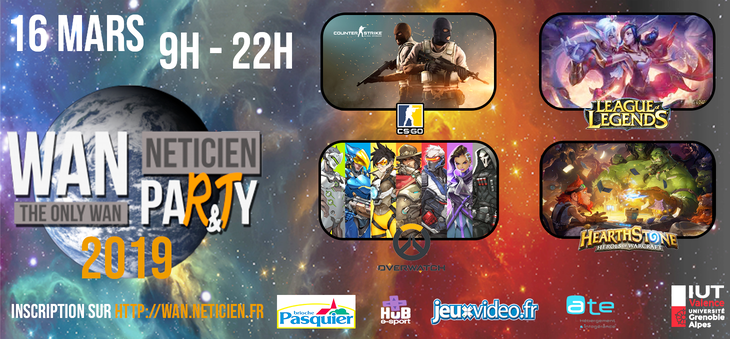

Dans mon cursus de DUT R�seaux et T�l�communications, j'ai choisi de travailler sur la Wan Party pour mon projet universitaire. Mais qu'est-ce que la Wan Party ? La Wan Party est un tournoi de jeux vid�o, comme les LAN ou des joueurs se retrouvent pour s'affronter sur un jeu vid�o. La diff�rence est que la Wan Party regroupe plusieurs IUT R&T de France et fait concourir les joueurs des IUT entre eux. (Pour plus d'info visitez le site de la WAN) Pour fonctionner la Wan Party est bas�e sur une certaine architecture compos�e :
Personnellement je me suis occup� de r�diger un document pour la mise en place de la machine de cache. Cette machine est r�alis�e sous Ubuntu avec Docker et s'appelle Steam-cache. Elle permet de mettre en cache les jeux de Steam, de Blizzard, de RiotGames et d'autres. Si vous voulez plus d'informations vous pouvez vous rendre sur le GitHub du projet, mais aussi sur mon document
Je me suis aussi occup� de r�aliser l'affiche et la banani�re publicitaire permettant aux joueurs de s'inscrire. Nous avons choisi de repr�senter diff�rents mondes dans l'univers. C'est une m�taphore des diff�rents univers dans lesquels nous emm�ne les jeux vid�o. Vous pouvez les voir ci-dessous:
Nous avons aussi d� pr�senter notre porjet pour le cours d'anglais. Vous pouvez voir ma video de pr�sentation ci-dessous :
Maintenant que vous avez d�couvert les grandes lignes du projet, vous pouvez lire (ou m�me jeter un coup d'�il) notre m�moire de projet
{kind=link}
{kind=link}